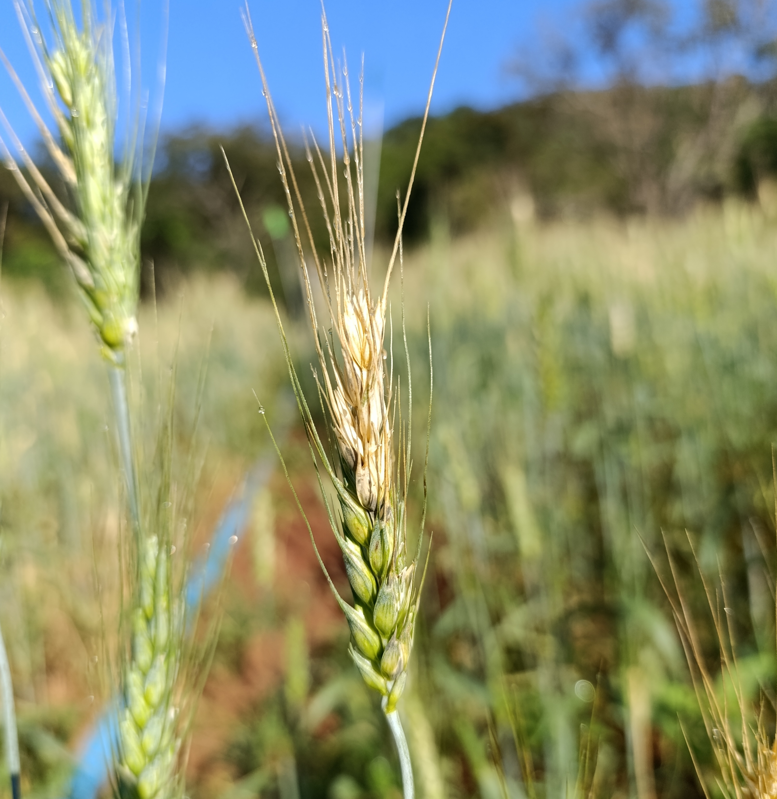
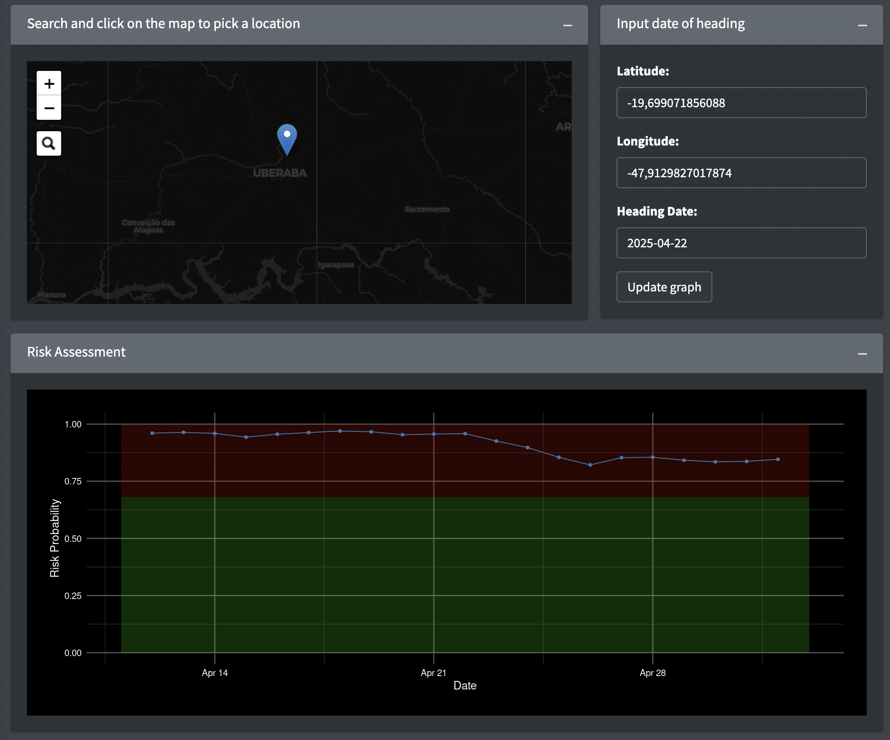
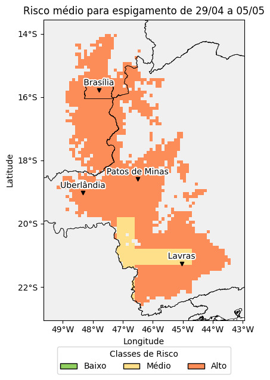

Brusone do trigo
Por que se preocupar com a brusone do trigo?

A brusone é uma das mais importantes doenças da cultura do trigo no Cerrado. Motivos não faltam para essa ser a principal preocupação dos triticultores nesta região. Apesar do uso de fungicidas e de cultivares menos suscetíveis, a doença ainda pode causar danos significativos no rendimento uma vez que esses métodos não são totalmente efetivos.
Do ponto de vista ambiental, o trigo de sequeiro é plantado no final do verão (final de fevereiro a meados/fim de março) onde as temperaturas mais altas associadas com alta umidade (chuvas de verão) garantem a presença do inóculo em diversas espécies de capins que podem hospedar uma fração da população da linhagem do fungo que causa a brusone no trigo (a linhagem Triticum), além daquelas linhagens que são específicas aos capins (e que não infectam o trigo). Em persistindo a alta umidade do ar e temperatura, a brusone pode aparecer ainda no estágio vegetativo do trigo, causando a brusone nas folhas, o que garante que esse novo inóculo, agora presente na lavoura, possa se movimentar das folhas para as espigas.
No entanto, esses fatos, por si só, não garantem a ocorrência da brusone nas espigas. É necessário que a umidade e temperatura mais alta prevaleça durante o período próximo ao espigamento do trigo. Nesse cenário, modelos preditivos, de base climática, podem ser úteis para alertar os produtores quanto às condições ambientais que podem estar sinalizando para um risco de epidemias, e assim poderem tomar decisões mais assertivas sobre aplicação de fungicidas.
Como saber se as condições ambientais estão favoráveis à brusone?
Em nosso Laboratório de Epidemiologia, na Universidade Federal de Viçosa, diversos estudos vêm sendo realizados para entender a epidemiologia da brusone do trigo no Cerrado. Em um dos trabalhos publicados, em parceria com a EPAMIG, um modelo de risco foi desenvolvido. O modelo leva em conta as condições climáticas no entorno do período de espigamento do trigo, considerado crítico para a ocorrência da doença. A infecção da espiga é favorecida por alta umidade relativa média diária nas duas semanas anteriores ao espigamento e por chuvas acumuladas na semana seguinte ao espigamento, enquanto temperaturas médias diárias abaixo de 22 °C, nas duas semanas anteriores ao espigamento, desfavorecem a infecção.
O modelo foi implementado em um dashboard interativo que está disponível na Internet. O sistema utiliza dados meteorológicos diários disponibilizados (do projeto NASA POWER - https://power.larc.nasa.gov/) em tempo “quase” real combinado com dados de previsão do tempo para os próximos sete dias usando dados gerados pelo projeto Open-Meteo (https://open-meteo.com/). O sistema permite estimar o risco para qualquer lugar do mundo. No entanto, seu é indicado para o Cerrado do Brasil, região onde a maioria dos dados foram obtidos para construir o modelo, sendo também devidamente validado quanto à acurácia da previsão.
Como acessar o sistema?
Para utilizar o sistema, o usuário deve acessar https://fitopatologiaufv.shinyapps.io/brusone/. Uma tela aparecerá contendo um mapa interativo onde o local da lavoura deverá ser selecionado clicando-se em cima do mapa. Há, também, a possibilidade de entrar diretamente com a latitude e longitude do local, para maior precisão. A segunda etapa é selecionar a data em que 50% das espigas do trigo estiveram emergidas. Com isso, pode-se rodar o modelo (clicando-se em “update graph”) e visualizar uma série temporal onde o valor de probabilidade é mostrado para um período de 10 dias anterior e posterior à data selecionada. A data mostrada quando da entrada no aplicativo, para o usuário, é aquela mais recente para poder rodar o modelo com dados meteorológicos disponíveis (10 dias antes do dia da consulta). Na simulação abaixo, para as datas de espigamento de 12 de abril a 2 de maio, para um local próximo à Uberaba, o risco foi estimado como alto (probabilidade acima de 0,68, situado na faixa vermelho do gráfico).

Como saber o risco para toda a região produtora de trigo no cerrado?
A partir do final de abril, estaremos gerando mapas de risco considerando as áreas acima de 700m de altitude no entorno dos municípios com relatos de produção de trigo e adjacentes. No primeiro mapa gerado, calculou-se a média do risco da brusone para espigamento ocorrendo no período semanal de 29 de abril a 5 de maio de 2025. Percebe-se que o risco está na sua maioria alto para todas as regiões produtoras onde o espigamento ocorreu na semana considerada. O produtor deve consultar o engenheiro agrônomo para saber sobre as melhores opções de fungicidas para o controle da doença.
